Sheldon Ross 10: Example 3.23
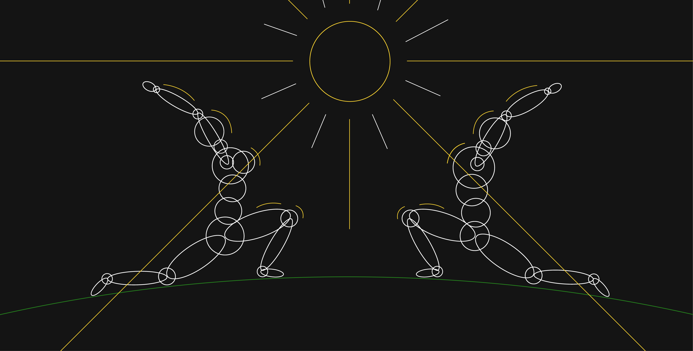
Question
Suppose that the number of people who visit a yoga studio each day is a Poisson random variable with mean
\(\lambda\). Suppose further that each person who visits is, independently, female with probability \(p\) or male
with probability \(1−p\). Find the joint probability that exactly \(n\) women and m men visit the academy today.
Solution
Dissecting the problem. I will try giving a brief explanation of the solution here. For a high detail of the
problem, please refer to the text
- Notice that there a constraint on the sum itself but \(n\) and \(m\) themselves could be variables given that
they add up-to a number
- The probability that we need can be denoted as follows
- \(P\{N_1=n, N_2=m\} = \underset{i}{\Sigma} P\{N_1=n, N_2=m | N = i\} P\{N=i\}\)
- Then, the probability that \(P\{N=i\}\) is poisson distribution \(e^{-\lambda} \frac{λ^{n+m}}{(n+m)!}\)
- since there are two components to the poisson count, we need to introduce a binomial here and simplifying them
we get two probabilities as \[P\{N_1=n\} = e^{-\lambda p} \frac{(λp)^n}{n!}\]
\[P\{N_2=m\} = e{-\lambda^{(1-p)}} \frac{(\lambda(1-p))^m}{m!}\]
Simulations
Approach to the simulations for this problem
- Pick an arbitrary \(\lambda\) for the Poisson Random Variate. Here I have chosen \(\lambda = 5\)
- The poisson outputs are numbers or the total number of people (male and female) visiting the yoga studio on
a given day
- Pass these numbers into a function that divides the number into males and females
- For example, if the total number of people visiting the studio is 6, then this function would give the
following combinations
- 0-Females & 6-Males
- 1-Females & 5-Males
- 2-Females & 4-Males
- 3-Females & 3-Males
- 4-Females & 2-Males
- 5-Females & 1-Males
- 6-Females & 0-Males
- Then, we need to reformat the data to match the input format for the BarChart
- All the above has been done in code that has been presented below the charts
ClearAll[genderDivide]
genderDivide[n_, p_: 0.5] :=
Module[{genderDivide =
RandomChoice[{p, 1 - p} -> {0, 1}, n]}, {Count[genderDivide, 0],
Count[genderDivide, 1]}]
Table[
Module[{plot},
plot = BarChart[
Plus @@@
GatherBy[
genderDivide[#, p] & /@
Sort@RandomVariate[PoissonDistribution[5], 10000],
Total@# &],
ChartLayout -> "Stacked",
LabelingFunction -> (Placed[Rotate[#, 90 \[Degree]], Above] &),
Frame -> True,
PlotLabel -> Style["Probability for females = " <> ToString@p, 20],
FrameLabel -> (Style[#, 15] & /@ {"Stacked Counts",
"Total number of people"}),
ImageSize -> 788, ChartLegends -> {"Female", "Male"}];
Export[StringReplace[NotebookFileName[],
".nb" -> "_stacked_chart_" <> ToString[Round[10 p]] <> ".svg"],
plot,
ImageSize -> 1000, ImageResolution -> 800]
]
, {p, 0.1, 0.9, 0.1}]
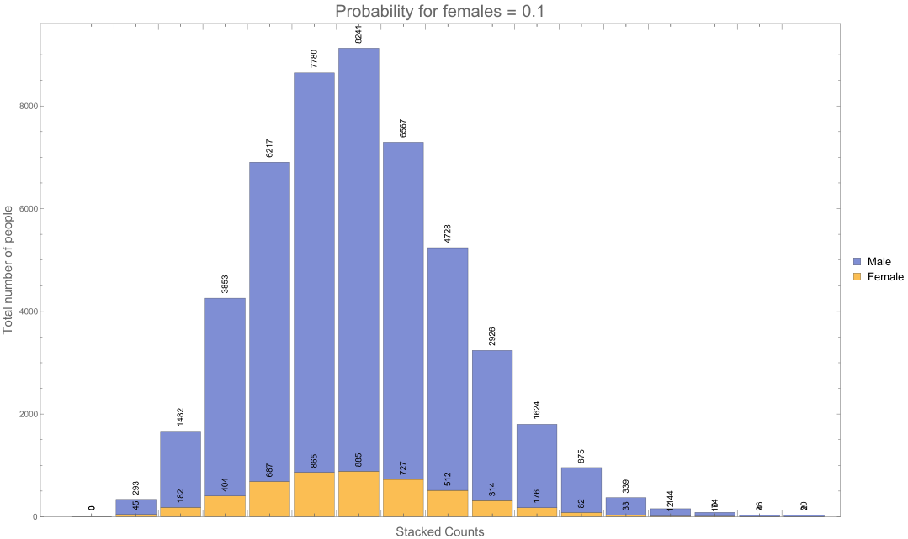
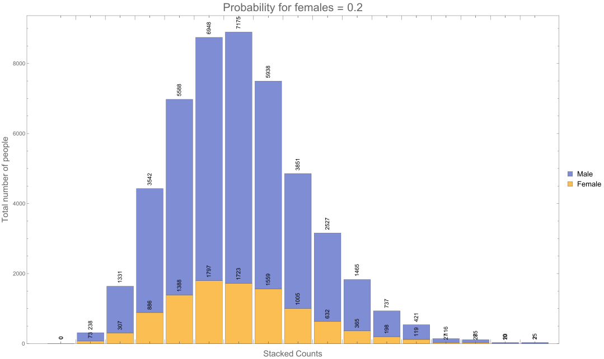
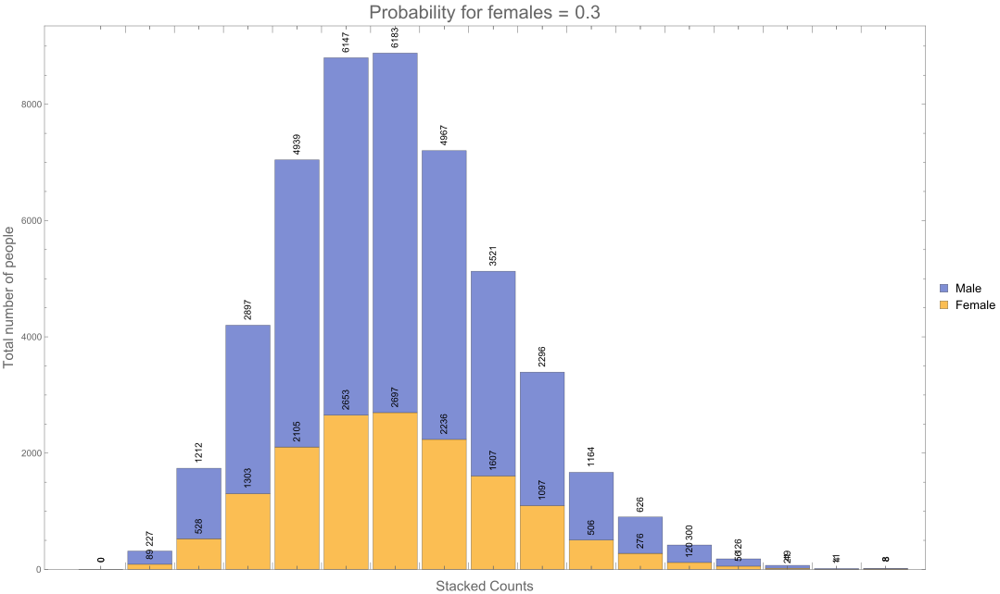
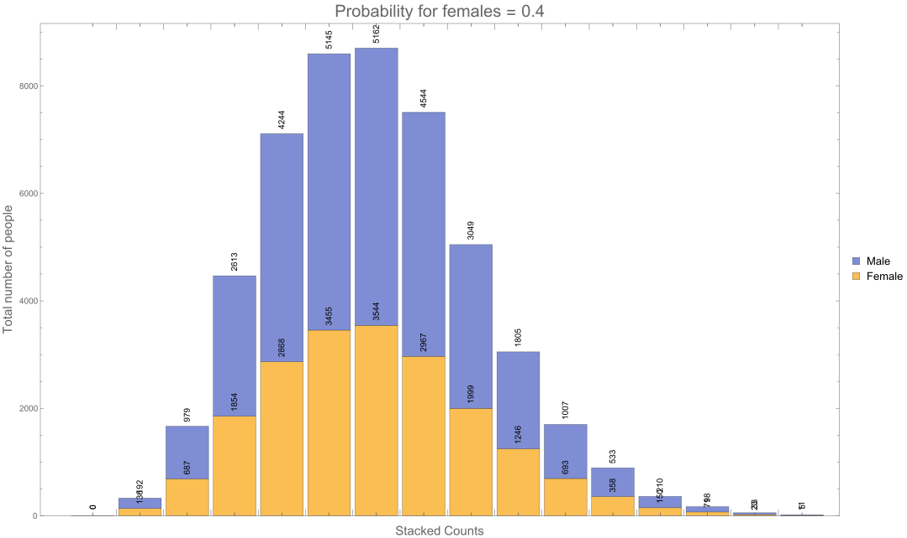
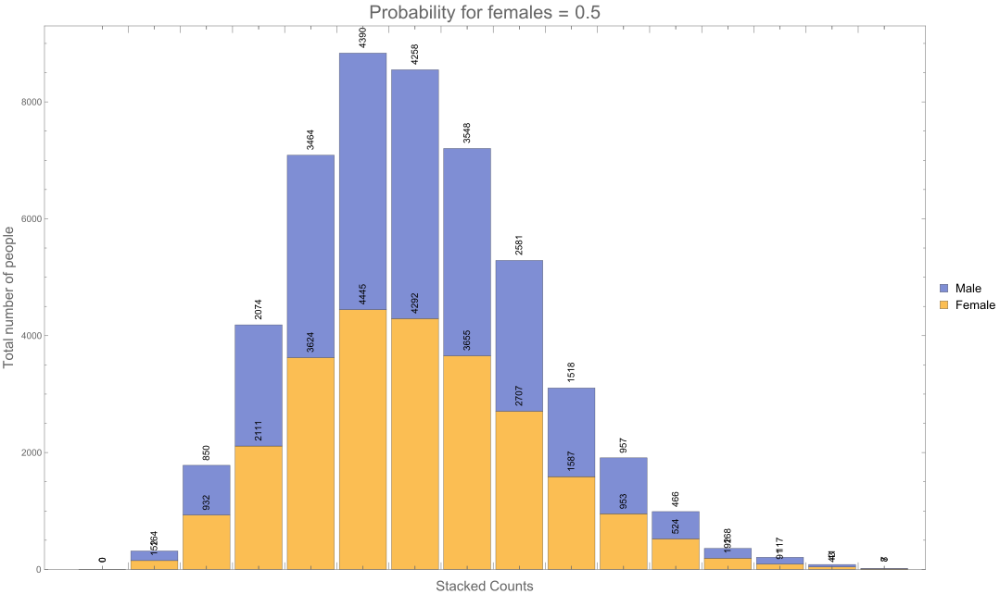
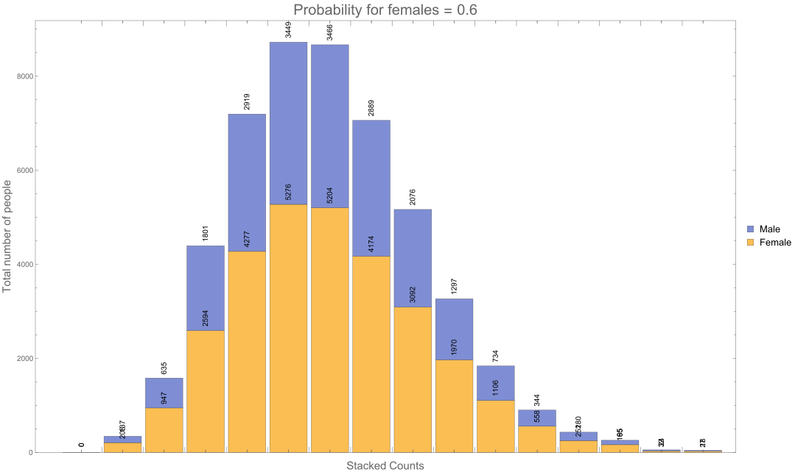
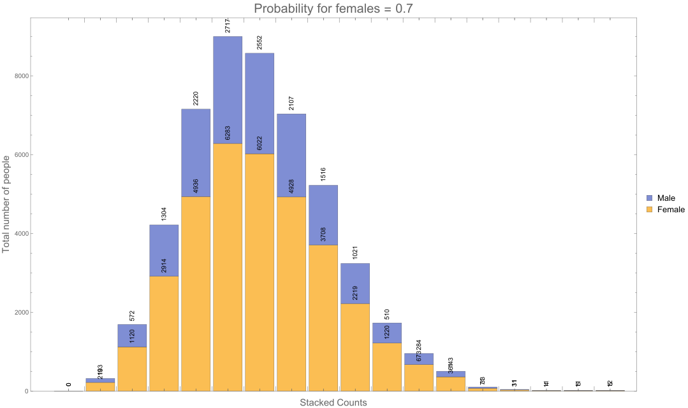
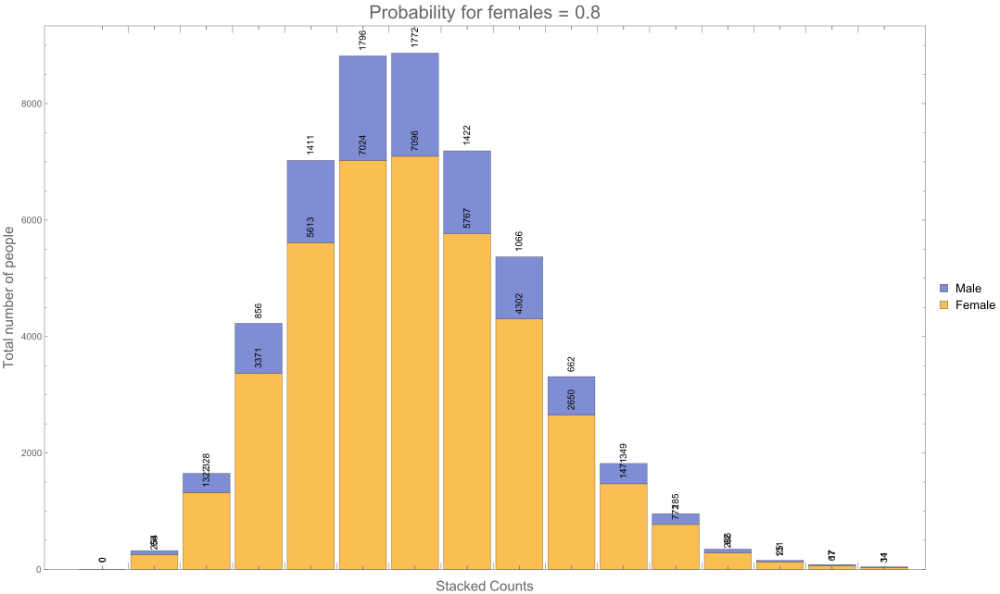
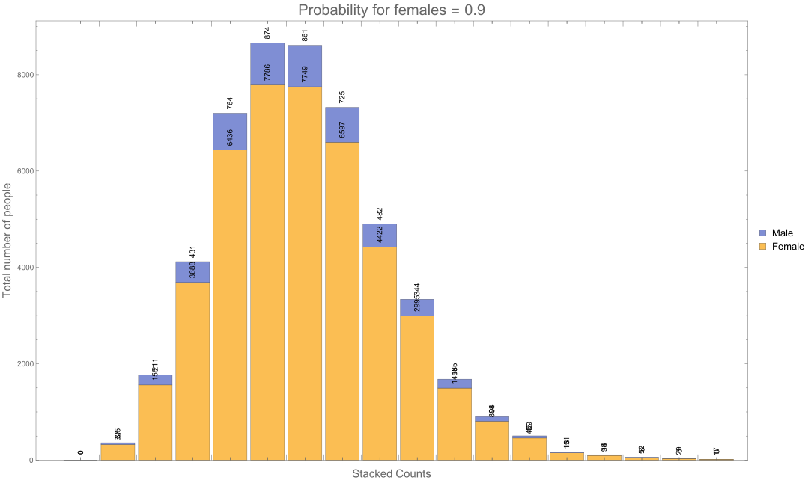
Theoretical Probabilities with Special Cases
- In the animations that follow, I have fixed the \(\lambda\) to be 25.
- Then, I have examined the cases where the total number of people is 20.
- This means that the 20 people could be formed from any one of the following cases
- \(N_{\text{females}} = 0 \text{ and } N_{\text{males}} = 20\)
- \(N_{\text{females}} = 1 \text{ and } N_{\text{males}} = 19\)
- \(N_{\text{females}} = 2 \text{ and } N_{\text{males}} = 18\)
- \(N_{\text{females}} = 3 \text{ and } N_{\text{males}} = 17\)
- \(N_{\text{females}} = 4 \text{ and } N_{\text{males}} = 16\)
- \(N_{\text{females}} = 5 \text{ and } N_{\text{males}} = 15\)
- \(N_{\text{females}} = 6 \text{ and } N_{\text{males}} = 14\)
- \(N_{\text{females}} = 7 \text{ and } N_{\text{males}} = 13\)
- \(N_{\text{females}} = 8 \text{ and } N_{\text{males}} = 12\)
- \(N_{\text{females}} = 9 \text{ and } N_{\text{males}} = 11\)
- \(N_{\text{females}} = 10 \text{ and } N_{\text{males}} = 10\)
- \(N_{\text{females}} = 11 \text{ and } N_{\text{males}} = 9\)
- \(N_{\text{females}} = 12 \text{ and } N_{\text{males}} = 8\)
- \(N_{\text{females}} = 13 \text{ and } N_{\text{males}} = 7\)
- \(N_{\text{females}} = 14 \text{ and } N_{\text{males}} = 6\)
- \(N_{\text{females}} = 15 \text{ and } N_{\text{males}} = 5\)
- \(N_{\text{females}} = 16 \text{ and } N_{\text{males}} = 4\)
- \(N_{\text{females}} = 17 \text{ and } N_{\text{males}} = 3\)
- \(N_{\text{females}} = 18 \text{ and } N_{\text{males}} = 2\)
- \(N_{\text{females}} = 19 \text{ and } N_{\text{males}} = 1\)
- \(N_{\text{females}} = 20 \text{ and } N_{\text{males}} = 0\)
- We will look at these for the probability values from 0.1 to 0.9 in steps of 0.1
- so the probabilities would be {0.1, 0.2, 0.3, 0.4, 0.5, 0.6, 0.7, 0.8, 0.9}
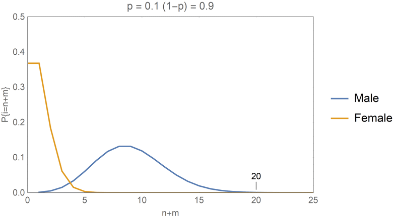
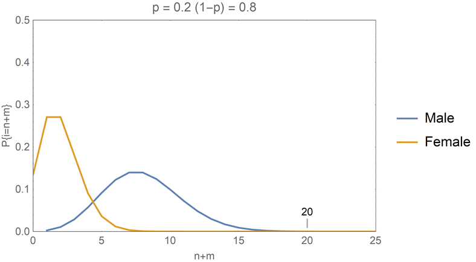
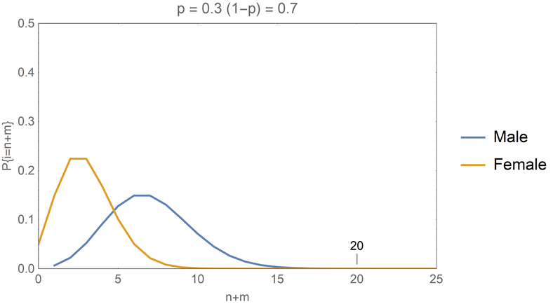
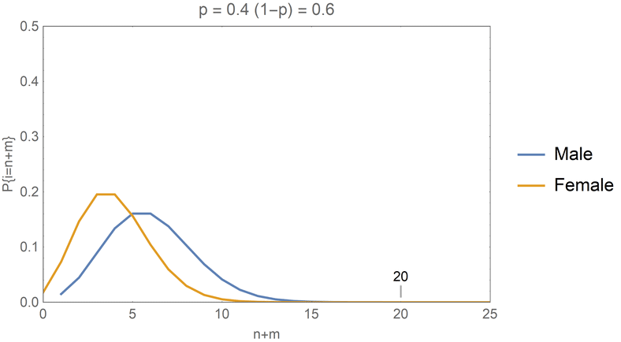
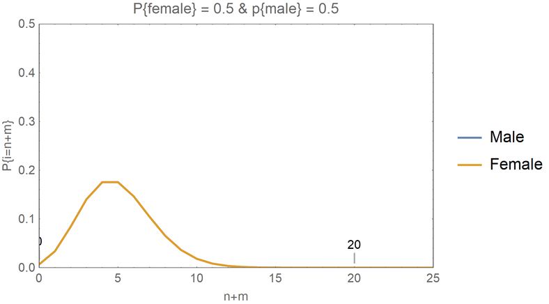
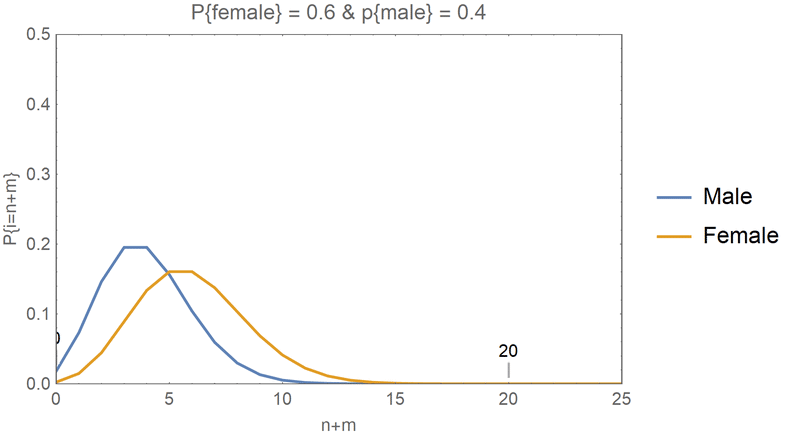
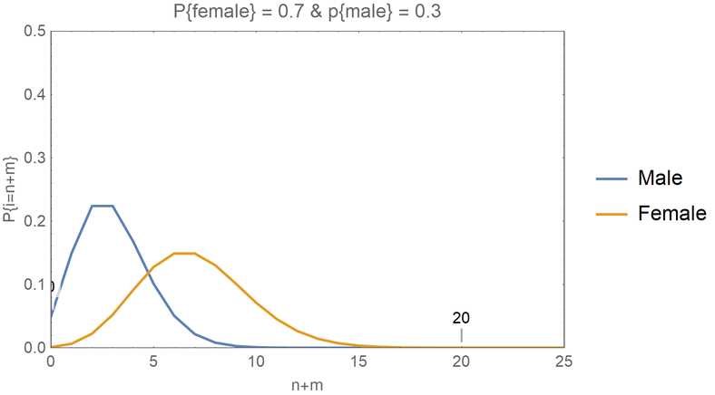
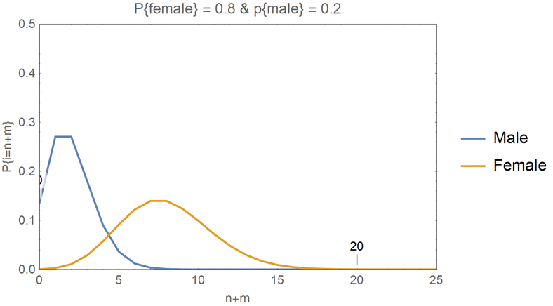
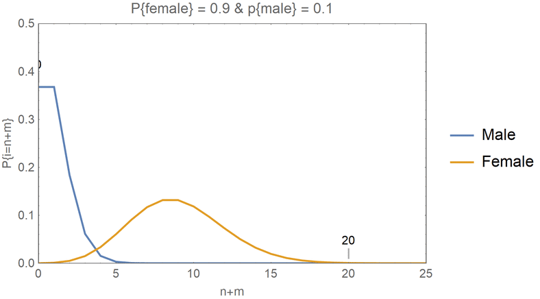